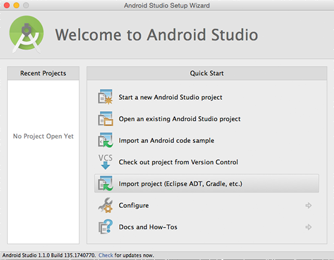
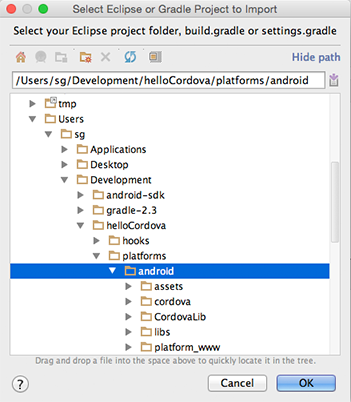
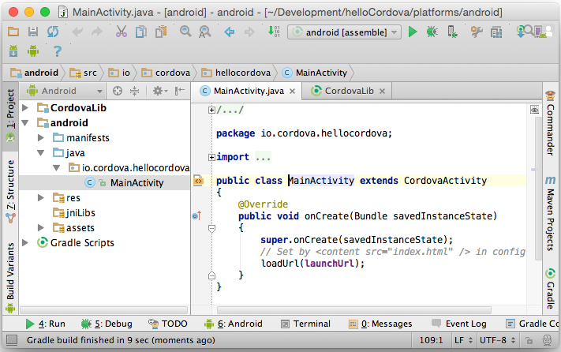

Android Platform Guide
This guide shows how to set up your SDK environment to deploy Cordova apps for Android devices, and how to optionally use Android-centered command-line tools in your development workflow. You need to install the Android SDK regardless of whether you want to use these platform-centered shell tools or cross-platform Cordova CLI for development. For a comparison of the two development paths, see the Overview. For details on the CLI, see Cordova CLI Reference.
Requirements and Support
Cordova for Android requires the Android SDK which can be installed on OS X, Linux or Windows. See the Android SDK's System Requirements. Cordova's latest Android package supports up to Android API-Level 23. The supported Android API-Levels for the past few cordova-android releases can be found in this table:
| cordova-android Version | Supported Android API-Levels |
|---|---|
| 5.X.X | 14 - 23 |
| 4.1.X | 14 - 22 |
| 4.0.X | 10 - 22 |
| 3.7.X | 10 - 21 |
Please note that the versions listed here are for Cordova's Android package,
cordova-android, and not for the
Cordova CLI. To determine what version of Cordova's Android package is installed
in your Cordova project, run the command cordova platform ls in the directory
that holds your project.
As a general rule, Android versions become unsupported by Cordova as they dip below 5% on Google's distribution dashboard.
Installing the Requirements
Java Development Kit (JDK)
Install Java Development Kit (JDK) 7 or later.
When installing on Windows you also need to set JAVA_HOME Environment Variable
according to your JDK installation path (see Setting Environment Variables)
Android SDK
Install the Android Stand-alone SDK Tools or Android Studio. Proceed with Android Studio if you plan on developing new Cordova for Android plugins or using native tools to run and debug the Android platform. Otherwise, the Android Stand-alone SDK Tools are enough to build and deploy Android applications.
Detailed installation instructions are available as part of installation links above.
Adding SDK Packages
After installing the Android SDK, you must also install the packages for whatever API level you wish to target. It is recommended that you install the highest SDK version that your version of cordova-android supports (see above).
Open Android SDK Manager (for example, run android from the terminal) and make
sure the following are installed:
- Android Platform SDK for your targeted version of Android
- Android SDK build-tools version 19.1.0 or higher
- Android Support Repository (found under "Extras")
See Android's documentation on Installing SDK Packages for more details.
Setting environment variables
Cordova's CLI tools require some environment variables to be set in order to function correctly. The CLI will attempt to set these variables for you, but in certain cases you may need to set them manually. The following variables should be updated:
- Set the
JAVA_HOMEenvironment variable to the location of your JDK installation - Set the
ANDROID_HOMEenvironment variable to the location of your Android SDK installation - It is also recommended that you add the Android SDK's
toolsandplatform-toolsdirectories to yourPATH
OS X and Linux
On a Mac or Linux, you can use a text editor to create or modify the
~/.bash_profile file. To set an environment variable, add a line that
uses export like so (substitute the path with your local installation):
export ANDROID_HOME=/Development/android-sdk/
To update your PATH, add a line resembling the following
(substitute the paths with your local Android SDK installation's location):
export PATH=${PATH}:/Development/android-sdk/platform-tools:/Development/android-sdk/tools
Reload your terminal to see this change reflected or run the following command:
$ source ~/.bash_profile
Windows
These steps may vary depending on your installed version of Windows. Close and reopen any command prompt windows after making changes to see them reflected
Click on the Start menu in the lower-left corner of the desktop
In the search bar, search for Environment Variables and select Edit the system Environment Variables from the options that appear
In the window that appears, click the Environment Variables button
To create a new environment variable:
- Click New... and enter the variable name and value
To set your PATH:
Select the PATH variable and press Edit.
Add entries for the relevant locations to the PATH. For example (substitute the paths with your local Android SDK installation's location):
C:\Development\android-sdk\platform-tools C:\Development\android-sdk\tools
Project Configuration
Setting up an Emulator
If you wish to run your Cordova app on an Android emulator, you will first need to create an Android Virtual Device (AVD). See the Android documentation for managing AVDs and the instructions for configuring the emulator and setting up hardware acceleration.
Once your AVD is configured correctly, you should be able to see it by running this command from within a Cordova project:
$ cordova run --list
Configuring Gradle
As of cordova-android@4.0.0, Cordova for Android projects are built using Gradle. For instructions on building with Ant, refer to older versions of the documentation.
Setting Gradle Properties
It is possible to configure the Gradle build by setting the values of certain Gradle properties that Cordova exposes. The following properties are available to be set:
| Property | Description |
|---|---|
cdvBuildMultipleApks |
If this is set, then multiple APK files will be generated: One per native platform supported by library projects (x86, ARM, etc). This can be important if your project uses large native libraries, which can drastically increase the size of the generated APK. If not set, then a single APK will be generated which can be used on all devices |
cdvVersionCode |
Overrides the versionCode set in AndroidManifest.xml |
cdvReleaseSigningPropertiesFile |
Default: release-signing.propertiesPath to a .properties file that contains signing information for release builds (see Signing an App) |
cdvDebugSigningPropertiesFile |
Default: debug-signing.propertiesPath to a .properties file that contains signing information for debug builds (see Signing an App). Useful when you need to share a signing key with other developers |
cdvMinSdkVersion |
Overrides the value of minSdkVersion set in AndroidManifest.xml. Useful when creating multiple APKs based on SDK version |
cdvBuildToolsVersion |
Overrides the automatically detected android.buildToolsVersion value |
cdvCompileSdkVersion |
Overrides the automatically detected android.compileSdkVersion value |
You can set these properties in one of four ways:
By setting environment variables like so:
$ export ORG_GRADLE_PROJECT_cdvMinSdkVersion=20 $ cordova build androidBy using the
--gradleArgflag in your Cordovabuildorruncommands:$ cordova run android -- --gradleArg=-PcdvMinSdkVersion=20By placing a file called
gradle.propertiesin your Android platform folder (<your-project>/platforms/android) and setting the properties in it like so:# In <your-project>/platforms/android/gradle.properties cdvMinSdkVersion=20By extending
build.gradlevia abuild-extras.gradlefile and setting the property like so:// In <your-project>/platforms/android/build-extras.gradle ext.cdvMinSdkVersion = 20
The latter two options both involve including an extra file in your Android
platform folder. In general, it is discouraged that you edit the contents of
this folder because it is easy for those changes to be lost or overwritten.
Instead, these two files should be copied from another location into that folder
as part of the build command by using the before_build
hook.
Extending build.gradle
If you need to customize build.gradle, rather than edit it directly, you
should create a sibling file named build-extras.gradle. This file will be
included by the main build.gradle when present. This file must be placed in
the android platform directory (<your-project>/platforms/android), so it is
recommended that you copy it over via a script attached to the before_build
hook.
Here's an example:
// Example build-extras.gradle
// This file is included at the beginning of `build.gradle`
ext.cdvDebugSigningPropertiesFile = '../../android-debug-keys.properties'
// When set, this function allows code to run at the end of `build.gradle`
ext.postBuildExtras = {
android.buildTypes.debug.applicationIdSuffix = '.debug'
}
Note that plugins can also include build-extras.gradle files via:
<framework src="some.gradle" custom="true" type="gradleReference" />
Setting the Version Code
To change the version code for your app's generated apk,
set the android-versionCode attribute in the widget element of your application's
config.xml file. If the android-versionCode is not set, the
version code will be determined using the version attribute. For example,
if the version is MAJOR.MINOR.PATCH:
versionCode = MAJOR * 10000 + MINOR * 100 + PATCH
If your application has enabled the cdvBuildMultipleApks Gradle property (see
Setting Gradle Properties), the version code of your app
will also be multiplied by 10 so that the last digit of the code can be used
to indicate the architecture the apk was built for. This multiplication will happen
regardless of whether the version code is taken from the android-versionCode
attribute or generated using the version. Be aware that some plugins added to your
project (including cordova-plugin-crosswalk-webview) may set this Gradle property
automatically.
Please Note: When updating the android-versionCode property, it is unwise to
increment the version code taken from built apks. Instead, you should increment
the code based off the value in your config.xml file's android-versionCode
attribute. This is because the cdvBuildMultipleApks property causes the version code
to be multiplied by 10 in the built apks and thus using that value will cause your next
version code to be 100 times the original, etc.
Signing an App
First, you should read the Android app signing requirements.
Using Flags
To sign an app, you need the following parameters:
| Parameter | Flag | Description |
|---|---|---|
| Keystore | --keystore |
Path to a binary file which can hold a set of keys |
| Keystore Password | --storePassword |
Password to the keystore |
| Alias | --alias |
The id specifying the private key used for singing |
| Password | --password |
Password for the private key specified |
| Type of the Keystore | --keystoreType |
Default: auto-detect based on file extension Either pkcs12 or jks |
These parameters can be specified using the command line arguments above to
the Cordova CLI build or run commands.
Note: You should use double -- to indicate that these are platform-specific arguments, for example:
cordova run android --release -- --keystore=../my-release-key.keystore --storePassword=password --alias=alias_name --password=password.
Using build.json
Alternatively, you could specify them in a build configuration file (build.json)
using the --buildConfig argument to the same commands. Here's a sample of a
build configuration file:
{
"android": {
"debug": {
"keystore": "../android.keystore",
"storePassword": "android",
"alias": "mykey1",
"password" : "password",
"keystoreType": ""
},
"release": {
"keystore": "../android.keystore",
"storePassword": "",
"alias": "mykey2",
"password" : "password",
"keystoreType": ""
}
}
}
For release signing, passwords can be excluded and the build system will issue a prompt asking for the password.
There is also support to mix and match command line arguments and parameters in
build.json. Values from the command line arguments will get precedence.
This can be useful for specifying passwords on the command line.
Using Gradle
You can also specify signing properties by including a .properties file and
pointing to it with the cdvReleaseSigningPropertiesFile and
cdvDebugSigningPropertiesFile Gradle properties (see Setting Gradle Properties).
The file should look like this:
storeFile=relative/path/to/keystore.p12
storePassword=SECRET1
storeType=pkcs12
keyAlias=DebugSigningKey
keyPassword=SECRET2
storePassword and keyPassword are optional, and will be prompted for if omitted.
Debugging
For details on the debugging tools that come packaged with the Android SDK, see Android's developer documentation for debugging. Additionally, Android's developer documentation for debugging web apps provides an introduction for debugging the portion of your app running in the Webview.
Opening a Project in Android Studio
Cordova for Android projects can be opened in the Android IDE, Android Studio.
This can be useful if you wish to use Android Studio's built in Android
debugging/profiling tools or if you are developing Android plugins. Please note
that when opening your project in Android studio, it is recommended that you do
NOT edit your code in the IDE. This will edit the code in the platforms folder
of your project (not www), and changes are liable to be overwritten. Instead,
edit the www folder and copy over your changes by running cordova build.
Plugin developers wishing to edit their native code in the IDE should use the
--link flag when adding their plugin to the project via cordova plugin add.
This will link the files so that changes to the plugin files in the platforms
folder are reflected in your plugin's source folder (and vice versa).
To open a Cordova for Android project in Android Studio:
Launch Android Studio.
Select Import Project (Eclipse ADT, Gradle, etc).

Select the Android platform directory in your project (
<your-project>/platforms/android).
For the
Gradle Syncquestion you can simply answer Yes.
Once it finishes importing, you should be able to build and run the app directly from Android Studio. See Android Studio Overview and Building and Running from Android Studio for more details.

Platform Centered Workflow
cordova-android includes a number of scripts that allow the platform to be used without the full Cordova CLI. This development path may offer you a greater range of development options in certain situations than the cross-platform cordova CLI. For example, you need to use shell tools when deploying a custom Cordova WebView alongside native components. Before using this development path, you must still configure the Android SDK environment as described in Requirements and Support above.
For each of the scripts discussed below, refer to Cordova CLI Reference for more information on their
arguments and usage. Each script has a name that matches the corresponding CLI
command. For example, cordova-android/bin/create is equivalent to
cordova create.
To get started, either download the cordova-android package from npm or Github.
To create a project using this package, run the create script in the bin
folder:
$ cordova-android/bin/create ...
The created project will have a folder named cordova inside that contains
scripts for the project-specific Cordova commands (e.g. run, build, etc.).
Additionally, The project will feature a structure different from that of a
normal Cordova project. Notably, /www is moved to /assets/www.
To install plugins in this project, use the Cordova Plugman Utility.
Upgrading
Refer to this article for instructions to upgrade your
cordova-android version.
Lifecycle Guide
Cordova and Android
Native Android apps typically consist of a series of activities that the user interacts with. Activities can be thought of as the individual screens that make up an application; different tasks in an app will often have their own activity. Each activity has its own lifecycle that is maintained as the activity enters and leaves the foreground of a user's device.
In contrast, Cordova applications on the Android platform are executed within a Webview that is embedded in a single Android activity. The lifecycle of this activity is exposed to your application through the document events that are fired. The events are not guaranteed to line up with Android's lifecycle, but they can provide guidelines for saving and restoring your state. These events roughly map to Android callbacks as follows:
| Cordova Event | Rough Android Equivalent | Meaning |
|---|---|---|
deviceready |
onCreate() |
Application is starting (not from background) |
pause |
onPause() |
Application is moving to the background |
resume |
onResume() |
Application is returning to the foreground |
Most other Cordova platforms have a similar concept of lifecycles and should fire these same events when similar actions happen on a user's device. However, Android presents some unique challenges that can sometimes show up thanks to the native Activity lifecycle.
What makes Android different?
In Android, the OS can choose to kill activities in the background in order to free up resources if the device running the application is low on memory. Unfortunately, when the activity holding your application is killed, the Webview in which your application lives will be destroyed as well. Any state that your application is maintaining will be lost in this case. When the user navigates back to your application, the Activity and Webview will be recreated by the OS, but state will not be automatically restored for your Cordova app. For this reason, it is imperative that your application be aware of the lifecycle events that are fired and maintain whatever state is appropriate to make sure a user's context in your app is not lost when they leave the application.
When can this happen?
Your application is susceptible to being destroyed by the OS whenever it leaves the sight of the user. There are two main situations in which this can occur. The first and most obvious case is when the user presses the home button or switches to another application.
However, there is a second (and much more subtle) case that certain plugins can introduce. As noted above, Cordova applications are usually confined to the single activity that contains the Webview. However, there are instances in which other activities may be launched by plugins and temporarily push the Cordova activity to the background. These other Activities are typically launched in order to perform a specific task using a native application installed on the device. For example, the Apache camera plugin launches whatever camera activity is natively installed on the device in order to take a photo. Reusing the installed camera application in this way makes your application feel much more like a native app when the user tries to take a photo. Unfortunately, when the native Activity pushes your app to the background there is a chance the OS will kill it.
For a clearer understanding of this second case, let's walk through an example using the camera plugin. Imagine you have an application that requires the user to take a profile photo. The flow of events in the application when everything goes as planned will look something like this:
- The user is interacting with your app and needs to take a picture
- The camera plugin launches the native camera activity
- The Cordova activity is pushed to the background (pause event is fired)
- The user takes a photo
- The camera activity finishes
- The Cordova activity is moved to the foreground (resume event is fired)
- The user is returned to your application where they left off
However, this flow of events can be disrupted if a device is low on memory. If the Activity is killed by the OS, the above sequence of events instead plays out as follows:
- The user is interacting with your app and needs to take a picture
- The camera plugin launches the native camera activity
- The OS destroys the Cordova activity (pause event is fired)
- The user takes a photo
- The camera activity finishes
- The OS recreates the Cordova activity (deviceready and resume events are fired)
- The user is confused as to why they are suddenly back at your app's login screen
In this instance, the OS killed the application in the background and the application did not maintain its state as part of the lifecycle. When the user returned to the app, the Webview was recreated and the app appeared to have restarted from scratch (hence the user's confusion). This sequence of events is equivalent to what happens when the home button is pressed or the user switches applications. The key to preventing the above experience is subscribing to events and properly maintaining state as part of the activity lifecycle.
Respecting the Lifecycle
In the examples above, the javascript events that are fired are noted in
italics. These events are your opportunity to save and restore your
application's state. You should register callbacks in your application's
bindEvents function that respond to the lifecycle events by saving state. What
information you save and how you save it is left to your discretion, but you
should be sure to save enough information so that you can restore the user to
exactly where they left off when they return to your application.
There is one additional factor in the example above that only applies in the second-discussed situation (i.e. when a plugin launches an external activity). Not only was the state of the application lost when the user finished taking a photo, but so was the photo that the user took. Normally, that photo would be delivered to your application through the callback that was registered with the camera plugin. However, when the Webview was destroyed that callback was lost forever. Luckily, cordova-android 5.1.0 and above provide a means for getting the result of that plugin call when your application resumes.
Retrieving plugin callback results (cordova-android 5.1.0+)
When the OS destroys the Cordova activity that was pushed into the background
by a plugin, any pending callbacks are lost as well. This means that if you
passed a callback to the plugin that launched the new activity (e.g. the camera
plugin), that callback will NOT be fired when the application is recreated.
However, starting in cordova-android 5.1.0, the resume event's payload will
contain any pending plugin results from the plugin request that launched the
external activity made prior to the activity being destroyed.
The payload for the resume event adheres to the following format:
{
action: "resume",
pendingResult: {
pluginServiceName: string,
pluginStatus: string,
result: any
}
}
The fields of that payload are defined as follows:
pluginServiceName: The name of the plugin returning the result (e.g. "Camera"). This can be found in the<name>tag of a plugin's plugin.xml filepluginStatus: The status of the plugin call (see below)result: Whatever the result of the plugin call is
The possible values for pluginStatus in the pendingResult field include the following:
"OK"- The plugin call was successful"No Result"- The plugin call ended with no result"Error"- The plugin call resulted in some general error- Other miscellaneous errors
"Class not found""Illegal access""Instantiation error""Malformed url""IO error""Invalid action""JSON error"
Please note that it is up to the plugin to decide what is contained in the
result field and the meaning of the pluginStatus that is returned. Reference
the API of the plugin you are using to see what you should expect those fields
to contain and how to use their values.
Example
Below is a brief example application that uses the resume and pause events
to manage state. It uses the Apache camera plugin as an example of how to
retrieve the results of a plugin call from the resume event payload. The
portion of the code dealing with the resume's event.pendingResult object
requires cordova-android 5.1.0+
// This state represents the state of our application and will be saved and
// restored by onResume() and onPause()
var appState = {
takingPicture: true,
imageUri: ""
};
var APP_STORAGE_KEY = "exampleAppState";
var app = {
initialize: function() {
this.bindEvents();
},
bindEvents: function() {
// Here we register our callbacks for the lifecycle events we care about
document.addEventListener('deviceready', this.onDeviceReady, false);
document.addEventListener('pause', this.onPause, false);
document.addEventListener('resume', this.onResume, false);
},
onDeviceReady: function() {
document.getElementById("take-picture-button").addEventListener("click", function() {
// Because the camera plugin method launches an external Activity,
// there is a chance that our application will be killed before the
// success or failure callbacks are called. See onPause() and
// onResume() where we save and restore our state to handle this case
appState.takingPicture = true;
navigator.camera.getPicture(cameraSuccessCallback, cameraFailureCallback,
{
sourceType: Camera.PictureSourceType.CAMERA,
destinationType: Camera.DestinationType.FILE_URI,
targetWidth: 250,
targetHeight: 250
}
);
});
},
onPause: function() {
// Here, we check to see if we are in the middle of taking a picture. If
// so, we want to save our state so that we can properly retrieve the
// plugin result in onResume(). We also save if we have already fetched
// an image URI
if(appState.takingPicture || appState.imageUri) {
window.localStorage.setItem(APP_STORAGE_KEY, JSON.stringify(appState));
}
},
onResume: function(event) {
// Here we check for stored state and restore it if necessary. In your
// application, it's up to you to keep track of where any pending plugin
// results are coming from (i.e. what part of your code made the call)
// and what arguments you provided to the plugin if relevant
var storedState = window.localStorage.getItem(APP_STORAGE_KEY);
if(storedState) {
appState = JSON.parse(storedState);
}
// Check to see if we need to restore an image we took
if(!appState.takingPicture && appState.imageUri) {
document.getElementById("get-picture-result").src = appState.imageUri;
}
// Now we can check if there is a plugin result in the event object.
// This requires cordova-android 5.1.0+
else if(appState.takingPicture && event.pendingResult) {
// Figure out whether or not the plugin call was successful and call
// the relevant callback. For the camera plugin, "OK" means a
// successful result and all other statuses mean error
if(event.pendingResult.pluginStatus === "OK") {
// The camera plugin places the same result in the resume object
// as it passes to the success callback passed to getPicture(),
// thus we can pass it to the same callback. Other plugins may
// return something else. Consult the documentation for
// whatever plugin you are using to learn how to interpret the
// result field
cameraSuccessCallback(event.pendingResult.result);
} else {
cameraFailureCallback(event.pendingResult.result);
}
}
}
}
// Here are the callbacks we pass to getPicture()
function cameraSuccessCallback(imageUri) {
appState.takingPicture = false;
appState.imageUri = imageUri;
document.getElementById("get-picture-result").src = imageUri;
}
function cameraFailureCallback(error) {
appState.takingPicture = false;
console.log(error);
}
app.initialize();
The corresponding html:
<!DOCTYPE html>
<html>
<head>
<meta http-equiv="Content-Security-Policy" content="default-src 'self' data: gap: https://ssl.gstatic.com 'unsafe-eval'; style-src 'self' 'unsafe-inline'; media-src *">
<meta name="format-detection" content="telephone=no">
<meta name="msapplication-tap-highlight" content="no">
<meta name="viewport" content="user-scalable=no, initial-scale=1, maximum-scale=1, minimum-scale=1, width=device-width">
<link rel="stylesheet" type="text/css" href="css/index.css">
<title>Cordova Android Lifecycle Example</title>
</head>
<body>
<div class="app">
<div>
<img id="get-picture-result" />
</div>
<Button id="take-picture-button">Take Picture</button>
</div>
<script type="text/javascript" src="cordova.js"></script>
<script type="text/javascript" src="js/index.js"></script>
</body>
</html>
Testing the Activity Lifecycle
Android provides a developer setting for testing Activity destruction on low memory. Enable the "Don't keep activities" setting in the Developer Options menu on your device or emulator to simulate low memory scenarios. You should always do some amount of testing with this setting enabled to make sure that your application is properly maintaining state.